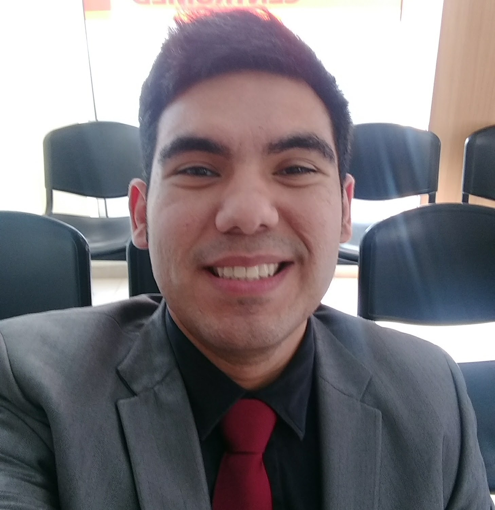

Angel de Jesús Fuenmayor Ferrer
Rut: 25.279.644-4
Jackson 867, Torre Z, Depto 14, Viña del Mar
Teléfono: +56 9 5537 8567
E-mail: ajff05@gmail.com

Educación
Credenciales Académicas
Licenciado en Educación: Mención Idiomas Modernos (Inglés/Francés). Universidad del Zulia. Facultad de Humanidades y
Educación, Departamento de Idiomas Modernos. Maracaibo, Venezuela. 2006-2011.
Tesis, Proyectos
“Análisis del servicio de atención comunicacional del personal operativo a clientes extranjeros angloparlantes del Hotel
Crowne Plaza Maruma Maracaibo”. Año: 2011. Universidad del Zulia, Venezuela. Supervisor: Dra. Petra Lúquez.
Experiencia
- Encargado Sala de Ventas "Editorial SM Chile S.A". Viña del Mar. Duración: Diciembre 2017 - Actualidad.
- Auditor Nocturno / Recepcionista “Hotel Diego de Almagro Valparaíso”. Duración: Junio 2017 - Noviembre 2017.
- Vendedor Integral y atención al cliente “Feria Chilena del Libro”, Mall Marina Arauco. Viña del Mar. Duración: Abril
2016 - Junio 2017.
- Trabajos freelance de traducción y revisión de textos en plataformas online. Duración: 2012-2016.
- Guía turístico para personas de habla inglesa y francesa - Valparaíso y Viña del Mar. Gemtour Turismo Aventura.
Duración: Enero 2016 - Marzo 2016.
- Profesor privado en tutorías y clases particulares de inglés. Duración: 2012-2016.
- Pasantías: Curso propedéutico de ESP (Inglés para Propósitos Específicos, según sus siglas en inglés) para estudiantes
de Educación Física. Universidad del Zulia. Duración: 1 semestre, período I, 2011.
- Inglés como Segundo Idioma. U.E “José Ignacio Pulido” (Primaria y Secundaria). Duración: 2 años escolares, 2009-2011
- Curso Propedéutico de ESP dirigido a miembros de la Fuerza Aérea Venezolana. Base Aérea Militar de Maracaibo. Duración:
12 semanas, Junio 2009 – Septiembre 2009.
Idiomas
- Inglés: Nivel fluido.
- Francés: Nivel intermedio.
- Español: Nivel nativo.
Práctica Profesional
- Auditoría de ventas, check-ins, check-outs y manejo de reservas en suite hotelera.
- Registro de inventarios, emisión de documentos fiscales (boletas, facturas, notas de crédito).
- Administración de recinto e instalaciones de trabajo.
- Resolución de problemas de manera eficiente.
- Gestión y recepción de mercaderías y pedidos (Control de Stock).
- Atención personalizada de público y anfitrión en tours.
- Experiencia en la docencia y enseñanza de idiomas a niños, adolescentes y adultos.
- Diseño de programas de estudio y planes de clases para la cátedra de inglés, dirigidos a estudiantes de primaria y
secundaria usando el enfoque de enseñanza CLT (Enseñanza de Idioma Comunicacional) y ESP (Inglés para Propósitos
Específicos), según sus siglas en inglés.
- Fortalecimiento de conocimientos y rendimiento académico del estudiante mediante la aplicación de un enfoque
comunicativo.
- Uso de plataformas online de enseñanza de idiomas y traducción como complemento curricular.
Habilidades y Cualificaciones
- Creativo, con fuertes habilidades analíticas, organizacionales e interpersonales con enfoque en el cliente, en la
productividad y el trabajo en equipo.
- Capacidad de aprendizaje con adaptabilidad al cambio.
- Conocimientos intermedios de computación: Componentes (hardware), instalación de software y S.O, armado de PC,
configuración, mantenimiento y diagnóstico.
- Manejo de software administrativo y ventas.
- Familiarizado con el uso de plataformas online de educación, traducción y revisión de textos.